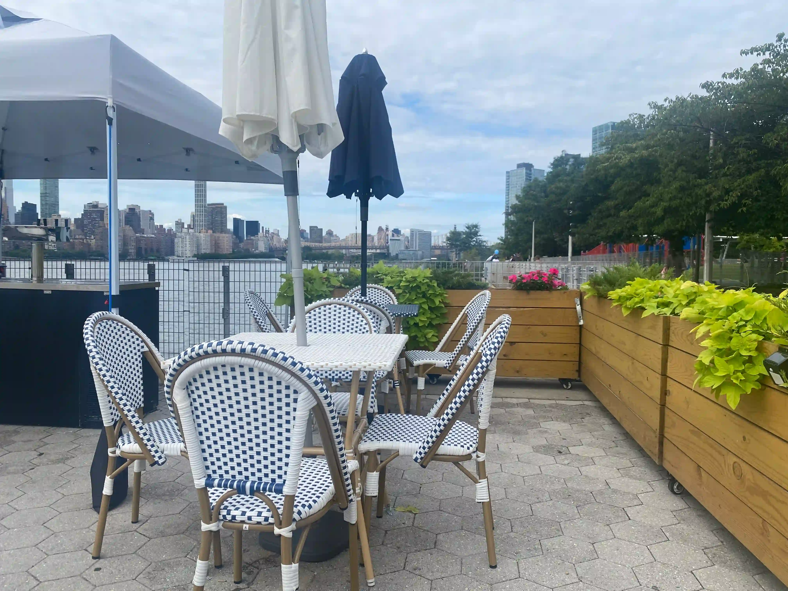

Digital Display: Arrivals Module
May 28, 2026
{kind=link}

The two things that I check on my phone every morning would be the weather app and, if I’m running particularly late, the MTA train time app as well. Making a display that displays this information would allow me to forego using my phone in the morning. So for my first electronics project, I wanted to create a digital display using a Raspberry Pi and an LED Matrix Panel. I’ll start by figuring out the hardware first and then creating the Arrivals Module. The Weather Module can come later.
I started by researching all the components that I needed for the project. This is the list of items that I have purchased in the end. They were all sourced from either Adafruit or Micro Center.
- 64x32 Pixel RGB LED matrix (HUB75 Standard) from Adafruit
- Raspberry Pi 4 Model B
- F-F Jumper wire set
- 2.1 mm jack to screw terminal block from Adafruit
- 5V 3A Power supply
- 5V 4A Power supply from Adafruit
- 32GB Mini SD Card
Sourcing the appropriate power supplies is important because incorrectly paired power supplies can damage the electronics. The power adapter should be able to handle a wide range of voltages. The range should encompass 120V for North America. The power adapter output voltage should match closely with the rated voltage of the device while providing a maximum output current that is greater than what the device demands. After verifying the specifications of my components, the 5V 3A power supply should be used for the Pi, while the 4A supply should be used for the display.
When the components arrived, I began setting up the Pi. I followed the Pi documentation by enabling the Raspberry Pi Connect functionality and installing Raspberry Pi OS onto the SD Card. Screensharing through Raspberry Pi Connect was my only option because I don’t have a free external monitor to connect the Pi to.
I'm glad that I learned the very basics of the command line interface (CLI), as executing the important commands for this project required interfacing with the terminal. I still referred to a table of commands often, as I’m still unfamiliar with the commands. I installed Python on the Pi and immediately got stuck installing the repository that I needed to communicate with the matrix. Turns out, a virtual environment has to be created beforehand to run Python. Once I got that problem resolved, I proceeded to download the rpi-rgb-led-matrix repository. With the repository installed, I decided that testing the sample programs and troubleshooting for common issues would be valuable in preventing programatic problems when I make my own LED matrix program. The matrix would have to be connected to power and the Pi before I can do any testing.
Adafruit recommended using their 2.1 mm jack to screw terminal block to connect with the power wires of the LED matrix. However, the power cables terminated in a fork shape. Usually, this would not be a problem, as the fork-shaped terminus is ideal for connecting many display panels together through a busbar. My project only uses one display panel, so this became an issue. My solution was to bend the forks so that the wires could meet the terminal block contacts.
The LED matrix receives instructions from the GPIO pinouts in the back of the panel. I referred to the HUB75 pinout layout and connected them to the appropriate GPIO pins on the Pi using the F-F jumper cables. With the power and data pins connected, I then used Claude to help me review the sample codes quickly. I learned that a lot of the bugs were caused by the following.
- Relative and absolute paths breaking
- GPIO slowdown parameter is set to a low value
- Some module syntax are out of date
With these bugs in mind, I installed the nyct_gtfs Python library and began writing my own display program. This library makes working with the MTA GTFS feed a lot easier. This library makes working with the MTA gtfs feed a lot easier. The GTFS standard allows transportation organizations to publish real-time data from the transportation system and format it for API access.
I created my own functions for displaying words, shapes, and formatting the overall display. The only thing I needed help with was implementing a buffer system for requesting the transportation information from nyct_gtfs. I used Claude sparingly to help me get this portion programmed, as the complexity of this is way over my head.
In the end, I was able to create a transportation Arrival Module that updates when (eta in minutes) and which (train lines represented as bullets) northbound and southbound trains will be arriving at a subway station. Three randomly selected stations are chosen for demonstration in this post. Since all of the code will be running on the Pi, I can have this display running 24/7 continuously.